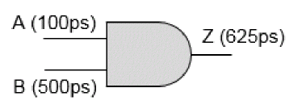

GBA vs PBA Comparison
When path-based analysis is run, the slew merging is not done and the actual slew on the timing arc of path is propagated. Thus, path-based analysis re-calculates timing in a timing path without considering side path slews that might otherwise affect the arrival times and slew values used in the calculation.
To understand slew merging in GBA, consider an example of a AND gate below.

Here, it is assumed that for any input slew, the output slew is 25% more than the input slew. So for a slew of 100ps at input A, corresponding output slew at Z is 125ps. Similarly, if slew at B is 500ps, then slew at Z is 625ps. In GBA for calculating delay and slew propagation through this AND gate, the worse input slew (through B) is always considered, irrespective of the fact that the path is through pin A or B. But in PBA, the actual slew through the concerned pin is accounted for in delay calculation and slew propagation.
Return to top